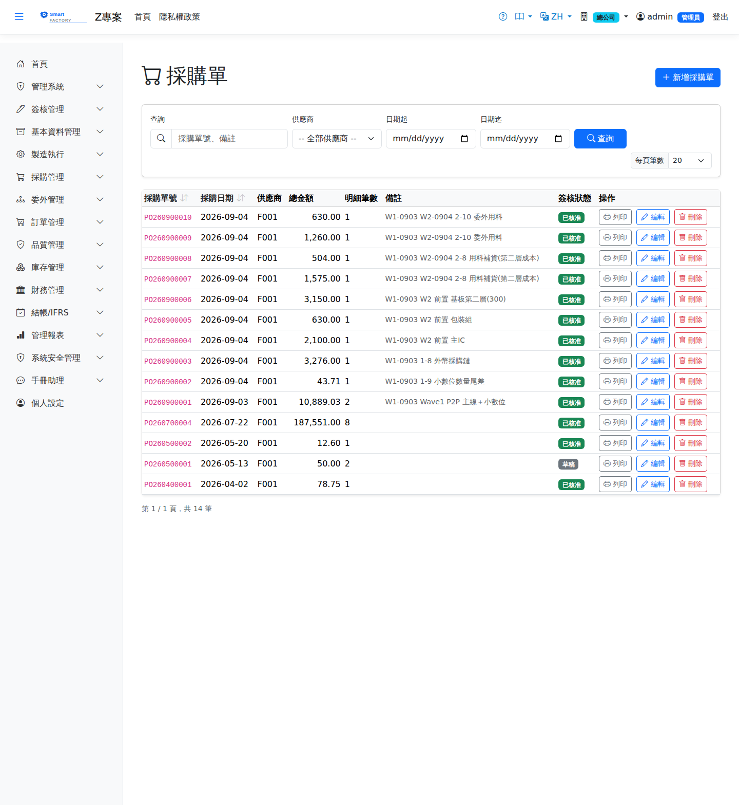

採購單Purchase Order
路由：/PurchaseOrder | 向供應商正式下單Route: /PurchaseOrder | Places a formal order with the supplier
由請購單轉開或手動建立。單價可自「廠商單價目錄」帶入；外幣採購以交易日匯率快照換算本位幣。確認後供應商依交期交貨，由進貨單收貨；行別追蹤已收量，已有進貨記錄的採購單不可刪除。Created from a purchase request or entered manually. Prices can be pulled from the vendor price list; foreign-currency purchases are converted to local currency with the rate snapshotted on the transaction date. Once confirmed, the supplier delivers by the promised date and the goods receipt brings the material in; each line tracks the received quantity, and an order that already has receipts cannot be deleted.

採購單畫面截圖（示意，實際欄位/資料依權限與查詢條件而異）Purchase order screenshot (illustrative; actual fields and data vary by permission and query criteria)
查詢Search
1
查詢列輸入條件後點「查詢」；欄位標題可點擊排序，清單下方有分頁導航。Enter your criteria on the query bar and click "Search"; column headers can be clicked to sort, and the paging controls sit below the list.
單據狀態Status
| 狀態Status | 說明Guide |
|---|---|
| 草稿 DraftDraft | 已建立未生效，可自由編輯、刪除；需簽核者於此狀態送審。Created but not yet effective; can be freely edited or deleted, and submitted for approval from this status. |
| 待審核Pending approval | 已送審等待簽核，不可編輯；可撤回改回草稿。Submitted and waiting for approval; it cannot be edited, but it can be withdrawn back to draft. |
| 已確認 ConfirmedConfirmed | 簽核核准（或免簽核直接確認）後生效，等待後續作業/過帳。Effective once approved (or confirmed directly when no approval is required), waiting for the next step or for posting. |
| 已過帳 PostedPosted | 庫存/帳務已入帳，單據不可再修改。Stock and accounting have been posted; the document can no longer be changed. |
| 已作廢 VoidVoid | 反向沖銷已過帳內容；作廢原因需留存，不可復原。Reverses what was posted; the void reason is kept and the action cannot be undone. |
作業流程Process
建立採購單Creating a purchase order
1
點「新增」開啟側欄，填寫採購單表頭與明細行後儲存（草稿）。Click "Add" to open the panel, fill in the purchase order header and lines, then save (as a draft).
2
點「送審」進入簽核流程；核准後單據自動轉「已確認」。若免簽核，直接點「確認」。Click "Submit" to start the approval flow; the document turns to "Confirmed" once approved. Where no approval is required, click "Confirm" directly.
3
核准後可列印採購單（含 QR Code）交付供應商。Once approved, the purchase order (with QR code) can be printed and sent to the supplier.
後續作業Follow-up actions
1
已確認/已過帳單據可點「列印」產生含 QR Code 的正式表單（新分頁開啟）。Confirmed and posted documents can be printed with "Print", producing the official form with a QR code in a new tab.
2
已過帳單據如需沖銷，點「作廢」並填寫原因；系統產生反向庫存/帳務異動。To reverse a posted document, click "Void" and enter a reason; the system creates the reversing stock and accounting entries.
欄位說明Field reference
表頭Header
| 欄位Field | 說明Guide |
|---|---|
| 採購單號Order No. | 系統採番，不可修改Numbered by the system; not editable |
| 採購日期Order Date | 必填Required 下單日期Order date |
| 供應商Supplier | 必填Required 交易對象；選定後帶出該廠商的議定單價、幣別與交易條件The trading partner; selecting one brings in its agreed prices, currency and trading terms |
| 交貨地址Delivery Address | 本次採購的收貨地址，預設帶廠別地址，可單次覆寫Delivery address for this order; the plant address is used by default and can be overridden per order |
| 貿易條件Trade Term (Incoterms) | 國外採購才需要填。它決定關稅、國際運費、報關費與保險由誰負擔，也就是決定這些費用要不要用「進料費用分攤」加進存貨成本：EXW／FOB 是我們負擔（要分攤），CIF 只有關稅與報關費是我們的，DDP 則全部由供應商負擔（不可分攤）。填錯不會有錯誤訊息，只會讓那批料的單價長期偏高或偏低。Only needed for overseas purchases. It decides who bears duty, international freight, customs clearance fees and insurance — and therefore whether those costs should be capitalised into inventory through Landed Cost Allocation: under EXW/FOB they are ours (allocate them), under CIF only duty and clearance fees are ours, and under DDP the supplier bears everything (do not allocate). Getting it wrong raises no error; it just leaves that material's unit cost permanently too high or too low. |
| 備註Notes | 整張採購單的補充說明Notes for the whole purchase order |
明細Lines
| 欄位Field | 說明Guide |
|---|---|
| 序號Seq | 明細行序Line seq |
| 請購參考PR Ref | 該行來源的請購單與行號；由請購「匯入」帶入時自動填寫並回寫請購的待處理量Source purchase request and line of this row; filled in automatically by "Import" from a request, which also updates the request's open quantity |
| 品號Item | 必填Required 採購的料件Item being purchased |
| 預交日期Delivery Date | 必填Required 供應商承諾的到貨日；採購逾期追蹤與 MRP 在途量以此為準Date the supplier promised to deliver; purchase overdue tracking and MRP in-transit quantities are based on it |
| 採購數量 / 採購單位Order Qty / Purchase UOM | 必填Required 訂購數量與採購計量單位。選了品號後，單位只列該品號可用的單位（庫存單位與查得到換算的單位，預設採購單位）。Ordered quantity and purchase unit of measure. Once a product is chosen, the unit list shows only the units usable for it (its stock unit and units that convert to it; purchase unit preselected). |
| 幣別Currency | 該行的交易幣別；本幣金額依單據匯率換算而得Transaction currency of the line; the local amount is converted with the document rate |
| 單價Unit Price | 交易幣別的未稅單價，小數位數依幣別設定Price before tax in the transaction currency; decimal places follow the currency setting |
| 稅別Tax | 稅別代碼，決定稅率；改稅別會重算稅額Tax code, which determines the rate; changing it recalculates the tax |
| 未稅金額Line Amt | 數量 × 單價Quantity × unit price |
| 稅額Tax | 未稅金額 × 稅率Amount before tax × tax rate |
| 含稅總額Total | 未稅金額 ＋ 稅額，仍為Amount before tax + tax, still in 交易幣別Currency |
| 本幣金額Local Amount | 含稅總額換算為本位幣的金額（本幣＝外幣 × 匯率）；表頭合計與帳務入帳一律採本幣The tax-inclusive total converted to local currency (local = foreign × rate); header totals and accounting entries always use local currency |
| 結案Close | 勾選後該行不再等待進貨（如廠商短交尾數不再補）；未結案且未到齊者列入採購逾期追蹤Once checked, the line no longer waits for delivery (for example when a supplier will not ship a short balance); open lines that are not fully received appear in purchase overdue tracking |
相關畫面Related screens
請購單Purchase requisition、進貨單Goods Receipt、廠商單價目錄Vendor Price List
注意：Note:外幣單價於存檔時快照匯率，之後匯率異動不影響已建單據；金額小數位依幣別設定。 The exchange rate of a foreign-currency price is snapshotted when the document is saved, so later rate changes do not affect existing documents; decimal places follow the currency setting.